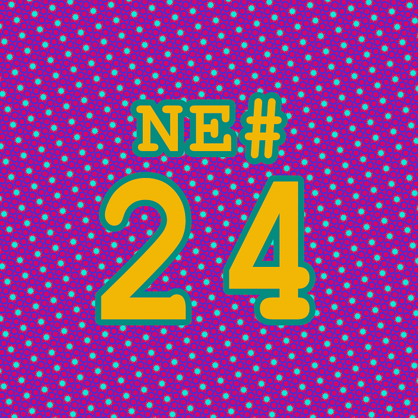

Die Nerd Enzyklopädie 24 - Zeichenketten braten

Nerd-Enzyklopädie #24
Ganz frei nach dem Motto: Es gibt nichts, was man nicht braucht (oder so ähnlich) hat man sich bei der Programmiersprache C wohl gedacht und eine Funktion implementiert, die aus einer Zeichenkette ein Anagram erzeugt [MAN1]:
strfry
Ausgesprochen steht strfry für „string fry“, also „Zeichenkette braten“ und diese Funktion macht nichts anderes, als die Zeichen eines Strings zufällig neu anzuordnen:
strfy(„Hello World“)
eoWloHl dlr
Guten Appetit.